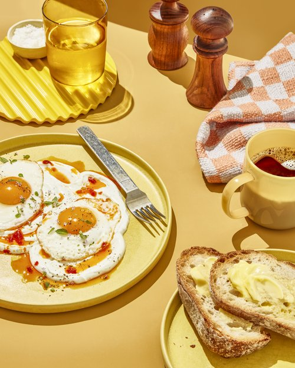

Softboiled-egg

Description
- Soft boiled eggs are my new obsession.
- whites of the eggs are firm, but the yolk stays silky, creamy, and in a liquid gold state.
- It is a little like a cross between butter and melted cheese.
- They are seriously divine. And they are not just for breakfast!
- I enjoy soft boiled eggs with toast, as an addition to bowl meals, as a topper for salads or soup (hello, ramen!), or just as a quick snack.
Ingredients
- 5-6 Eggs
- Dish
- Water
- Salt
- Chilli powder
Steps
- Add the eggs to a saucepan and cover with water.
- Bring to a rolling boil.
- Turn off the heat, cover, and let sit.
- Strain and run under cold water.
- Peel or store for later.